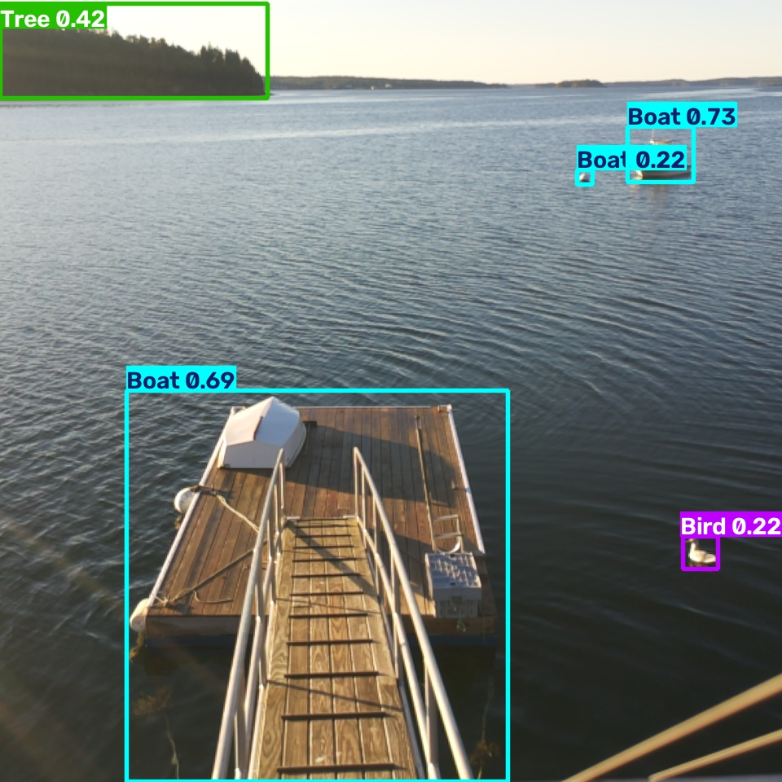
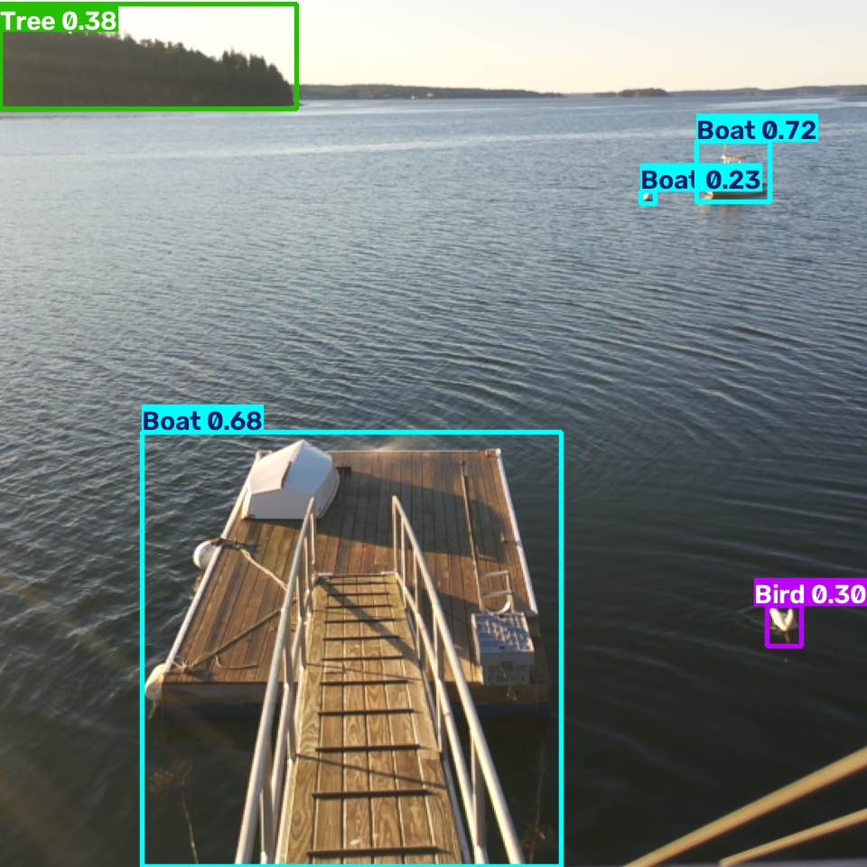

In action — 24 September 2026, 07:16
Wide camera on the left of the story, Dockwatcher detections inset at the same second. Gull approaches. Two frames label it a bird. The valve opens. The bird swims off.
What Dockwatcher saw
These are the only two frames from that event with a bird box. They are timestamped to the video so the valve opening is tied to the detection, not to a timer.


How it decides
- Live frames from an IMX500 camera on a Raspberry Pi.
- Object detection looks for birds — and for people.
- A bird has to appear on more than one frame before the valve is trusted.
- If a person was seen recently, the sprayer stays closed.
- A short burst from a pop-up nozzle on the outer edge of the float is enough.